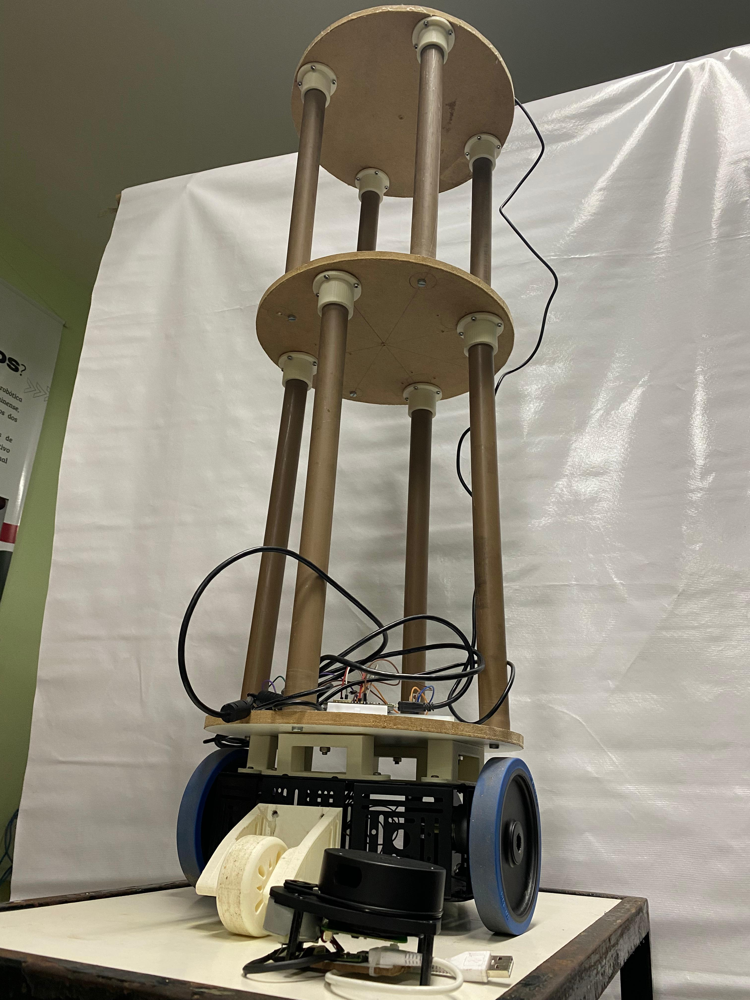

RoboHome
Mechanical Structure
Enable Robo@home to move seamlessly in all directions, offering exceptional maneuverability in tight spaces. They ensure precise movement, allowing the robot to navigate obstacles and deliver medication efficiently.
Sensors
The Lidar uses a rotating laser sensor to perform 360-degree scans,
providing precise mapping and obstacle detection. It operates
efficiently even in low-light conditions, ensuring safe navigation in
indoor environments.
The camera captures high-resolution images, making it ideal for facial
recognition and object detection. With a wide field of view and the
ability to adapt to various lighting conditions, it is perfect for
tasks such as identifying people and objects within the home.
Electronics
The Raspberry Pi 4 acts as the main processor, enabling real-time data
processing from sensors while supporting various systems such as
navigation and object recognition.
The ESP32 microcontroller handles motor control, ensuring precise
movement by managing speed and direction commands. By taking on this
task, it reduces the processing load on the Raspberry Pi, improving
overall efficiency.
Software
ROS 2 provides a robust framework for communication between
components, facilitating real-time data processing, navigation, and
decision-making. Its flexibility and scalability make it ideal for
supporting future enhancements.
Using YOLO v8, the system identifies objects like furniture, doors,
and medications in real time. This capability aids in safe navigation
and enhances task execution.
Facial recognition ensures personalized interactions by identifying
individuals, playing a critical role in tasks like accurate medication
delivery and supporting users with memory-related challenges.
The system employs AI for natural communication in both English and
Portuguese. It adapts to user emotions and behaviors, providing
guidance and reassurance tailored to individual needs.
LiDAR-SLAM processes data from LiDAR sensors to perform Simultaneous
Localization and Mapping. This creates detailed real-time maps,
enabling efficient and autonomous navigation even in dynamic
environments.